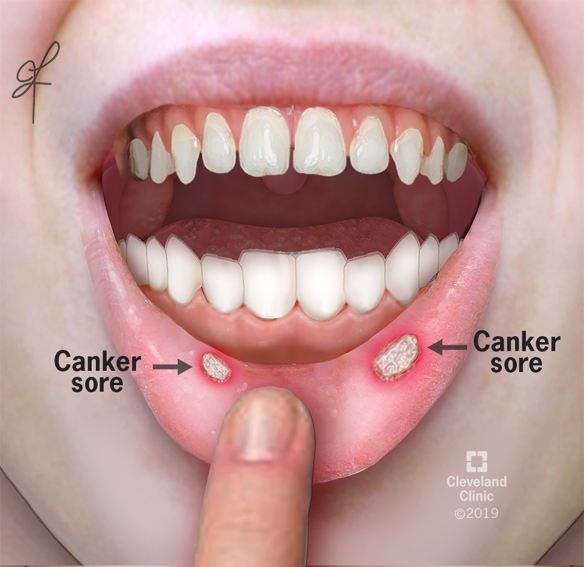

Canker sores

SYMPTOMS:
- a small white or yellow oval-shaped ulcer in your mouth
-
a painful red area in your mouth
-
a tingling sensation in your mouth
-
swollen lymph nodes
-
a fever
-
not feeling well
CAUSES:
- viral infection
-
stress
-
hormonal fluctuation
-
food allergy
-
menstrual cycle
-
vitamin or mineral deficiency
-
immune system problem
-
mouth injury
Home Remedies
- Applying ice or tiny amounts of milk of magnesia to your sores can help relieve pain and promote healing. Rinsing your mouth with a mixture of warm water and baking soda (1 tsp. per 1/2 cup of water) can also help with pain and healing. Honey has been shown to be effective in treating canker sores as well.